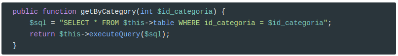
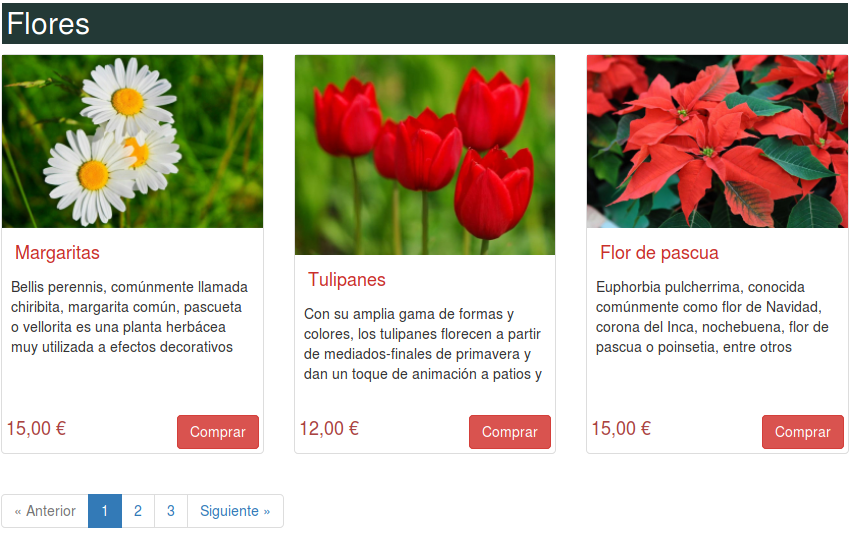
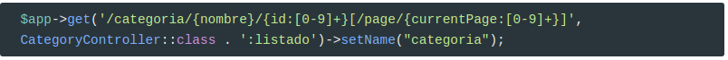
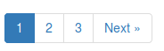

Vamos a implementar el listado de productos por categoría.
Como siempre, nos hace falta:
- definir una ruta
- crear un método en el repositorio
- crear el controlador
- crear la vista
- crear el partial.
3.1 Ruta

ProductRepository

CategoryController

NOTA. Se llama
$categoriaActualy no$categoriaporque en el partialcategory.part.phpya usamos una variable con el mismo nombre.
categoria.view.php
<?php
include __DIR__ . "/partials/inicio-doc.part.php";
include __DIR__ . "/partials/productos.part.php";
include __DIR__ . "/partials/fin-doc.part.php";
?>
productos.part.php
xxxxxxxxxx
<div class="row">
<h2 class='subtitle'>= $categoriaActual->getNombre()</h2>
foreach($productos as $producto){
include "thumbnail-producto.part.php";
}
</div>
Crear el enlace a las categorías
Ahora nos hace falta modificar el enlace asociado en el menú de categorías. Para ello volvemos a hacer uso del enrutador en category.part.php
xxxxxxxxxx
href="<?=$router->pathFor('categoria',
['nombre' => ProyectoWeb\app\utils\Utils::encodeURI($categoria->getNombre()), 'id' => $categoria->getId()])?>"
3.2 Paginador
Vamos a incluir un paginador para los productos:

Para ello nos hace falta:
modificar la ruta
-
un componente paginador, que necesita
- conocer la página actual
- conocer el número total de productos de la categoría
- conocer cuántos productos listamos en cada categoría
- conocer la ruta a cada página
modificar el repositorio
un partial para el paginador
modificar la vista
Ruta
Modificamos la ruta para que ahora incluya la página como un parámetro. Va ser del estilo: /categoria/flores/1/page/2
Por tanto,

Fijaos en:
xxxxxxxxxx
[/page/{currentPage:[0-9]+}]
Cuando una parámetro va entre corchetes significa que es opcional.
Paginador
Vamos a usar el siguiente paginador: https://github.com/jasongrimes/php-paginator
Como bien indica, para instalarlo:
xxxxxxxxxxcomposer require "jasongrimes/paginator"
Este paginador se crea de la siguiente forma:
xxxxxxxxxx
$paginator = new Paginator($totalItems, $itemsPerPage, $currentPage, $urlPattern);
Por lo que hemos de crear un método en ProductRepository para obtener el número total de productos, $totalItems, de una categoría.

En este caso el método de devolución de resultados ya no es \PDO::FETCH_CLASS sino \PDO::FETCH_ASSOC porque no queremos que nos devuelva objetos sino un array asociativo.
$itemsPerPage vamos a definirlo en el archivo de configuración config.php y en config-sample.php.
xxxxxxxxxx
//Está en formato diff
'settings' => [
'displayErrorDetails' => true //False en produccción
],
- ]
+ ],
+ 'itemsPerPage' => 3
];
$currentPage lo obtenemos a partir del parámetro que nos inyecta el enrutador en CategoryController::listado:
xxxxxxxxxx
$currentPage = ($currentPage ?? 1);
Por último, ya sólo nos queda generar $urlPattern. En el ejemplo la especifica de la siguiente manera:
xxxxxxxxxx
$urlPattern = '/foo/page/(:num)';
Porque el paginador reemplaza (:num)por el número de página real. En nuestro caso va a ser (lo usaremos más adelante)
xxxxxxxxxx
$this->container->router->pathFor('categoria',
['nombre' => \ProyectoWeb\app\utils\Utils::encodeURI($categoriaActual->getNombre()),
'id' => $categoriaActual->getId()
]) .
'/page/(:num)';
De esta forma, los enlaces a las páginas de la categoría flores serán de la siguiente forma:
xxxxxxxxxx/categoria/flores/1/page/1/categoria/flores/1/page/2/categoria/flores/1/page/3
Consulta SQL
Se ha de modificar la consulta para que ahora nos vaya trayendo páginas en vez de todos los productos:

Partial para el paginador
Este es muy sencillo. De momento vamos a usar el que viene por defecto:

El partial lo llamamos pager.part.php
xxxxxxxxxx
<?=$paginator?>
Modificamos la vista
Incluimos el partial en la vista categoria.view.php:
xxxxxxxxxx
<?php
include __DIR__ . "/partials/inicio-doc.part.php";
include __DIR__ . "/partials/productos.part.php";
include __DIR__ . "/partials/pager.part.php";
include __DIR__ . "/partials/fin-doc.part.php";
?>
Pasos finales
Ya podemos acabar el controlador:

Mejora del paginador
Modificamos el partial para que el paginador sea de la siguiente forma:

Simplemente he usado uno de los ejemplos que ya vienen preinstalados, pager.phtml, y lo he modificado un poco. Así que pager.part.php queda como sigue:
x
<?php if ($paginator->getNumPages() > 1): ?>
<ul class="pagination">
<?php if ($paginator->getPrevUrl()): ?>
<li><a href="<?php echo $paginator->getPrevUrl(); ?>">« Anterior</a></li>
<?php else: ?>
<li class="disabled"><a href="#">« Anterior</a></li>
<?php endif; ?>
<?php foreach ($paginator->getPages() as $page): ?>
<?php if ($page['url']): ?>
<li <?php echo $page['isCurrent'] ? 'class="active"' : ''; ?>>
<a href="<?php echo $page['url']; ?>"><?php echo $page['num']; ?></a>
</li>
<?php else: ?>
<li class="disabled"><span><?php echo $page['num']; ?></span></li>
<?php endif; ?>
<?php endforeach; ?>
<?php if ($paginator->getNextUrl()): ?>
<li><a href="<?php echo $paginator->getNextUrl(); ?>">Siguiente »</a></li>
<?php else: ?>
<li class="disabled"><a href="#">Siguiente »</a></li>
<?php endif; ?>
</ul>
<?php endif; ?>
Credits.
Víctor Ponz victorponz@gmail.com
Este material está licenciado bajo una licencia Creative Commons, Attribution-NonCommercial-ShareAlike